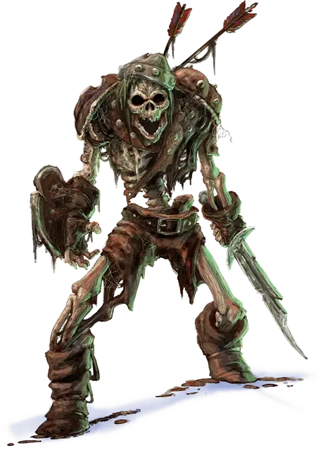

Скелет
Skeleton
Средняя Нежить, законно-злая

Класс Доспеха 13 (обломки доспехов)
Хиты 13 (2к8 + 4)
Скорость 30 футов
| мод | спас | ||
|---|---|---|---|
| СИЛ | 10 | +0 | +0 |
| ЛОВ | 14 | +2 | +2 |
| ТЕЛ | 15 | +2 | +2 |
| мод | спас | ||
|---|---|---|---|
| ИНТ | 6 | −2 | −2 |
| МДР | 8 | −1 | −1 |
| ХАР | 5 | −3 | −3 |
Уязвимость к урону дробящий
Иммунитет к урону яд
Иммунитет к состояниям истощение, отравление
Чувства тёмное зрение 60 футов, пассивное Восприятие 9
Языки понимает все, известные при жизни, но не говорит
Опасность 1/4 (50 опыта)
Бонус мастерства +2
Среда обитания Город
Действия
Короткий меч. Рукопашная атака оружием: +4 к попаданию, досягаемость 5 футов, одна цель. Попадание: 5 (1к6 + 2) колющего урона.
Короткий лук. Дальнобойная атака оружием: +4 к попаданию, дистанция 80 футов/ 320 футов, одна цель. Попадание: 5 (1к6 + 2) колющего урона.
Описание
Являющиеся скоплением костей, оживленных темной магией, скелеты внимают призыву тех, кто создал их, или сами восстают в местах, насыщенных магией смерти.
Природа нежити. Скелету не нужен воздух, еда, питьё и сон.
См. дополнительно статью: "Бестиарий: Скелеты"